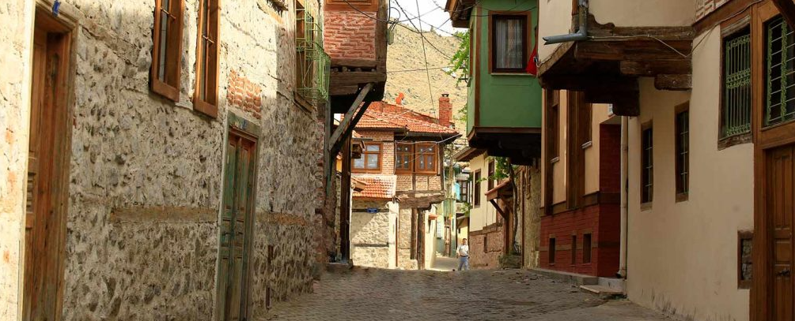
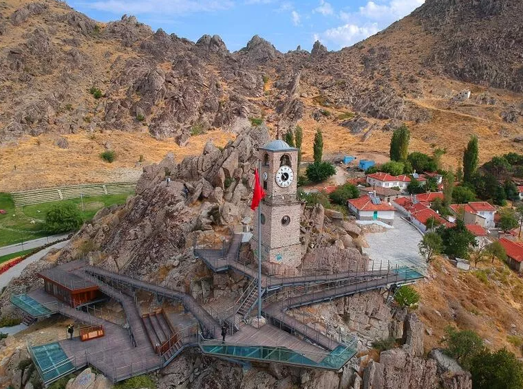

SİVRİHİSAR
ivrihisar, Eskişehir'in en büyük ilçesidir.
Nasreddin Hoca, Yunus Emre, Aziz Mahmut Hüdai, Hızır Bey gibi
çok önemli Türk büyüklerinin bu ilçeden çıktığı iddia edilmektedir.
Ankara'ya 120 km. Eskişehir'e 90 km. uzaklıktadır.
1926'dan önce Ankara'nın ilçesiydi.
Sivrihisar 1289 tarihinde Osmanlı hakimiyeti altına girdi.
Bir müddet sonra, Osman Bey Sivrihisar’la birlikte bütün Eskişehir çevresinin idaresini kardeşi Gündüz Beye vermiştir.
TARİHİ
Sivrihisar şehirle bütünleşmiş ve ilçenin medar-ı iftiharı
olan Nasreddin Hoca’nın da doğum yeri. Türk halk mizahının
büyük filozofu Nasreddin Hoca, 1208’de Sivrihisar’ın Hortu Köyü’nde doğdu.
Mahallenin adı 1999’da Nasreddin Hoca olarak değiştirildi.
Hoca’nın evi hâlen burada varlığını sürdürüyor.
İki katlı ev, belediyeden anahtarı alınarak gezilebiliniyor.
Hortu Köyü Sivrihisar’a 26 kilometre uzaklıkta.
Mahallede, Kültür ve Turizm Bakanlığı tarafından bir de temsili Nasreddin Hoca evi yaptırılmış.
Bu ev de halka açık
Hoca’nın doğduğu evin Sivrihisar’da, türbesinin ise Akşehir’de bulunması
iki ilçe arasında, Hoca’yı sahiplenme yönünde, sürekli bir tartışma ve gerginlik konusu olmuş.
Sivrihisar Belediye Başkanı Yaşar Yurtdaş, şair Arif Nihat Asya’nın şu dizeleri
ile aradaki buzları eritmek istediğini söylüyor: ‘Bir beşik kalmış Sivrihisar’da.
Akşehir’de bir mezar. Sayesinde akraba olmuşlar Akşehir’le Sivrihisar.’


Odunpazarı İlçesi Hakkında Bilgi Almak İçin Tıklayınız.